Alien: Isolation levels live under DATA/ENV/ (often as PRODUCTION/<name>). This page lists the common map names you'll see in OpenCAGE's level picker and launch dialog, plus a short description of what each map contains.
Related: Mission IDs.
BSP_LV426_Pt01 |
LV-426, including the Anesidora hangar and view over to the derelict. | 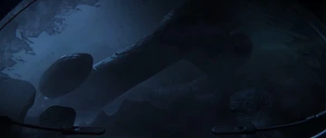 |
BSP_LV426_Pt02 |
LV-426, inside the derelict. | 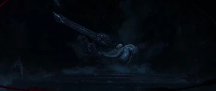 |
BSP_Torrens |
The Torrens, including the hypersleep area, canteen, medical area and bridge. | 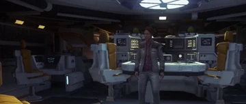 |
Solace |
The interior of the Anesidora. | 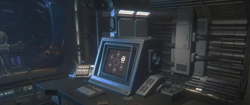 |
TECH_Comms |
Seegson Communications, including the external comms array. | 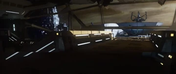 |
TECH_Hub |
The central area of the Lorenz SysTech Spire that the transit connects to. Includes the server hub, archive room and Lorenz SysTech lobby. | 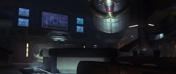 |
TECH_MuthrCore |
APOLLO, including the server banks. | 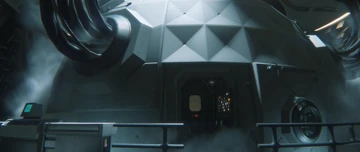 |
TECH_RnD |
Gemini Exoplanet Solutions. | 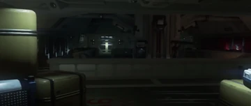 |
TECH_RnD_HzdLab |
The Project KG-348 research labs, including the detachable lab. | 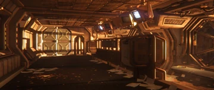 |
SCI_AndroidLab |
The entirety of Seegson Synthetics — Components Warehouse, Android Disposal, the Synthetic Showroom and Facility Administration. The transit station to APOLLO is here. | 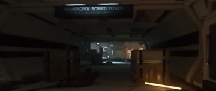 |
SCI_HospitalLower |
San Cristobal Medical lower floors, including the Ambulance Bay, Medical Reception, Medical Wards and Operating Theatre. | 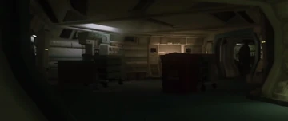 |
SCI_HospitalUpper |
San Cristobal Medical upper floors, including Dr. Kuhlman's office, Psychiatric Wards, Staff Quarters and Patient Rooms. | 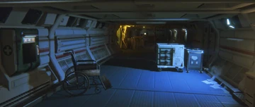 |
SCI_Hub |
The central SciMed Tower transit area, leading to upper/lower San Cristobal Medical and Seegson Synthetics. Transit Control is accessed by elevator. | 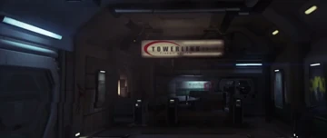 |
HAB_Airport |
Where Amanda initially arrives on Sevastopol — Spaceflight Terminal, baggage reclaim, Axel's den, and the lower airport where Axel and Amanda meet looters. | 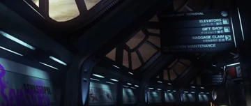 |
HAB_CorporatePent |
The Corporate Penthouses, including the two transit waiting areas, canteen, projector room, library, entertainment terminals and games room. | 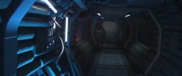 |
HAB_ShoppingCentre |
The Solomons Galleria, including the Marshal Bureau and transit station. | 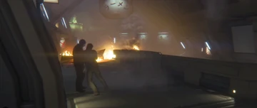 |
ENG_Alien_Nest |
The Hive below the Reactor Core. Accessible through the Reactor Core on mission 14 by elevator. | 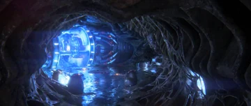 |
ENG_ReactorCore |
The Reactor Core and Facility Management areas. | 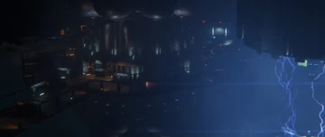 |
ENG_TowPlatform |
The Tow Platform, second Hive (plus ruined transit tunnels leading away from it), and docking clamp. | 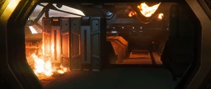 |
BSPNostromo_Ripley |
The Last Survivor DLC map on the Nostromo. | 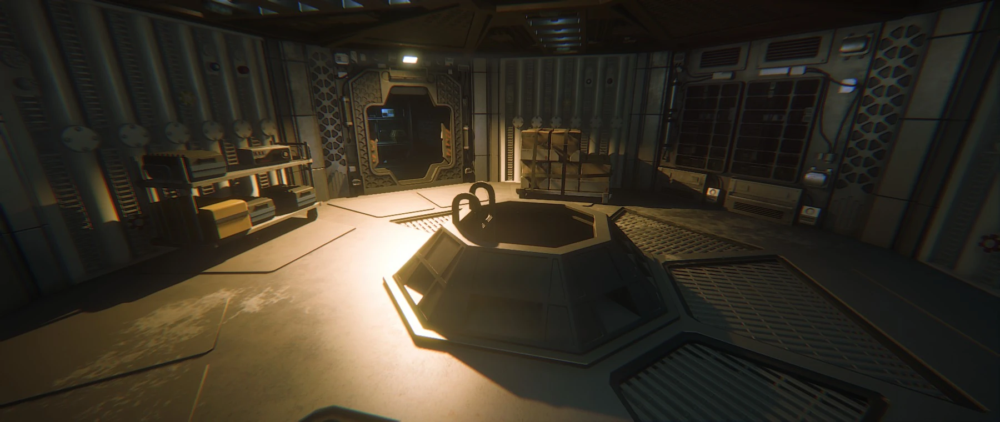 |
BSPNostromo_TwoTeams |
The Crew Expendable DLC map on the Nostromo. | 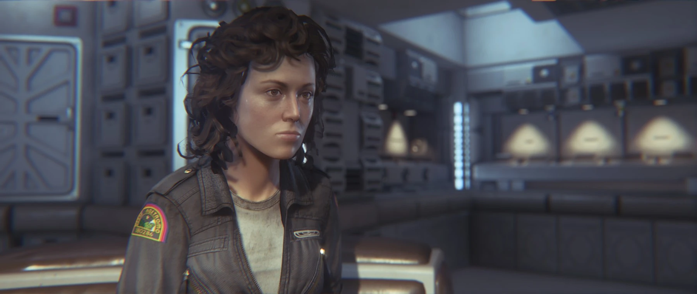 |
ChallengeMap1 |
"Blast Seat" — Survivor Mode map from The Trigger DLC pack. | 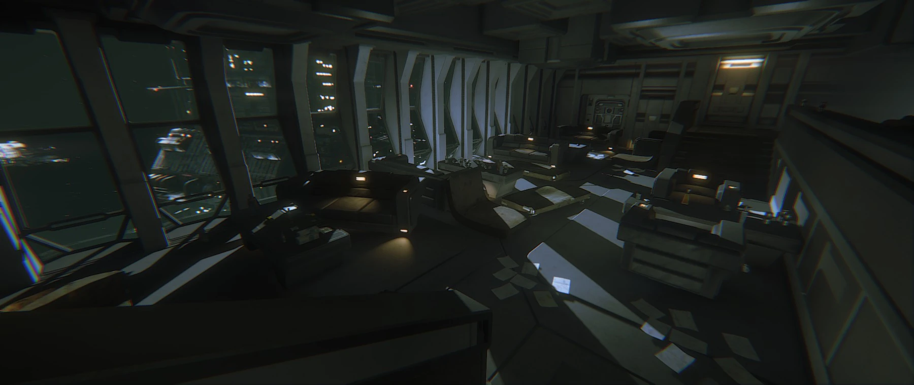 |
ChallengeMap3 |
"Overrun" — Survivor Mode map from the Trauma DLC pack. | 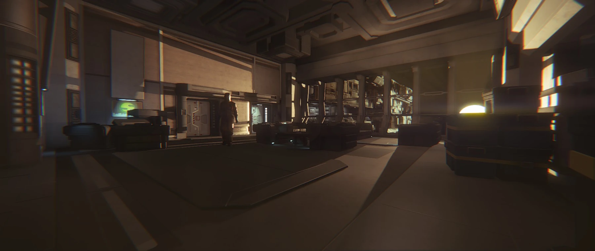 |
ChallengeMap4 |
"Severance" — Survivor Mode map from the Corporate Lockdown DLC pack. | 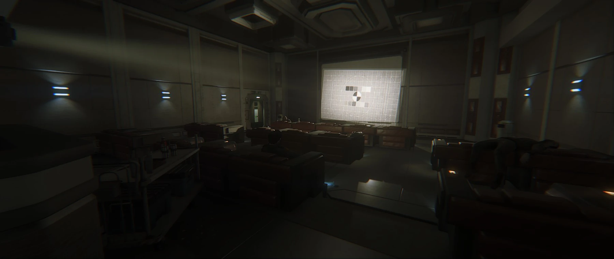 |
ChallengeMap5 |
"Scorched Earth" — Survivor Mode map from the Corporate Lockdown DLC pack. | 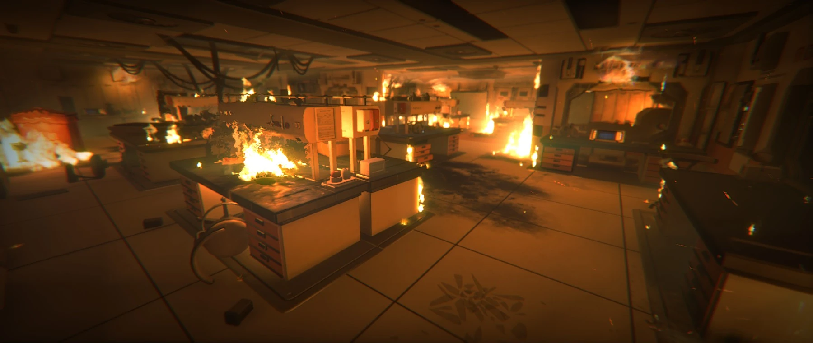 |
ChallengeMap7 |
"Reoperation" — Survivor Mode map from the Trauma DLC pack. | 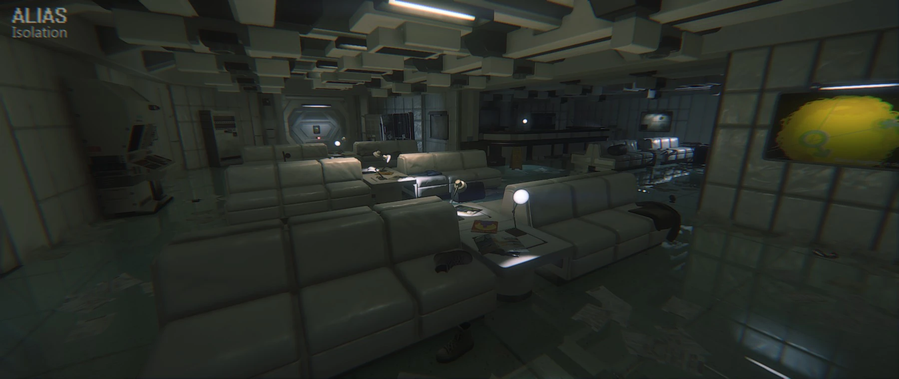 |
ChallengeMap9 |
"Crawl Space" — Survivor Mode map from the Trauma DLC pack. | 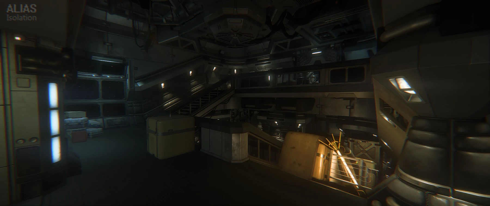 |
ChallengeMap11 |
"Loose Ends" — Survivor Mode map from the Corporate Lockdown DLC pack. | 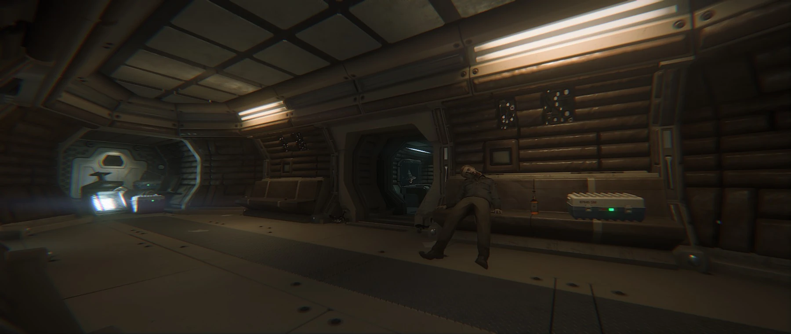 |
ChallengeMap12 |
"Damage Control" — Survivor Mode map from The Trigger DLC pack. | 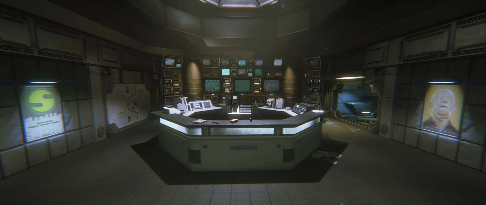 |
ChallengeMap14 |
"The Package" — Survivor Mode map from The Trigger DLC pack. | 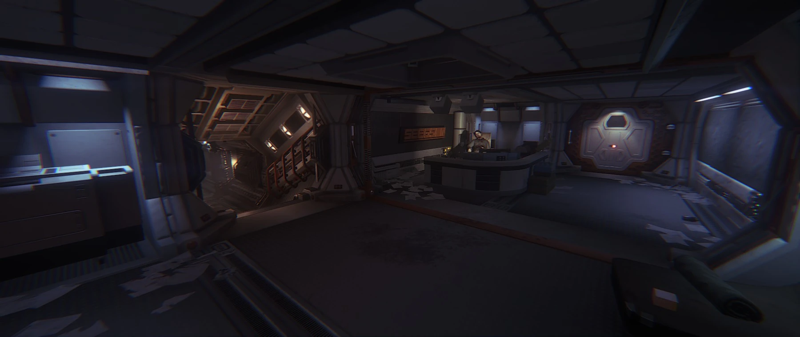 |
ChallengeMap16 |
"The Basement" — free Survivor Mode map included with the game. | 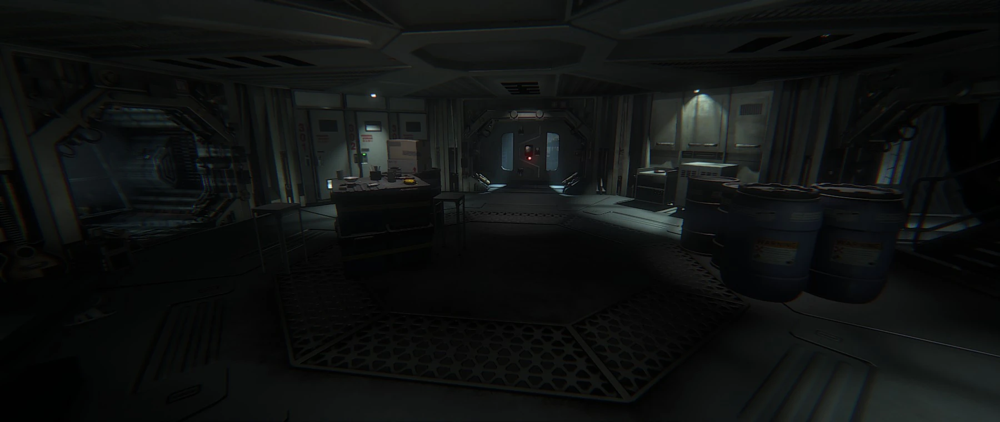 |
SalvageMode1 |
"Safe Haven" — Safe Haven DLC (Gemini Secondary Systems and Bacchus Apartments). | 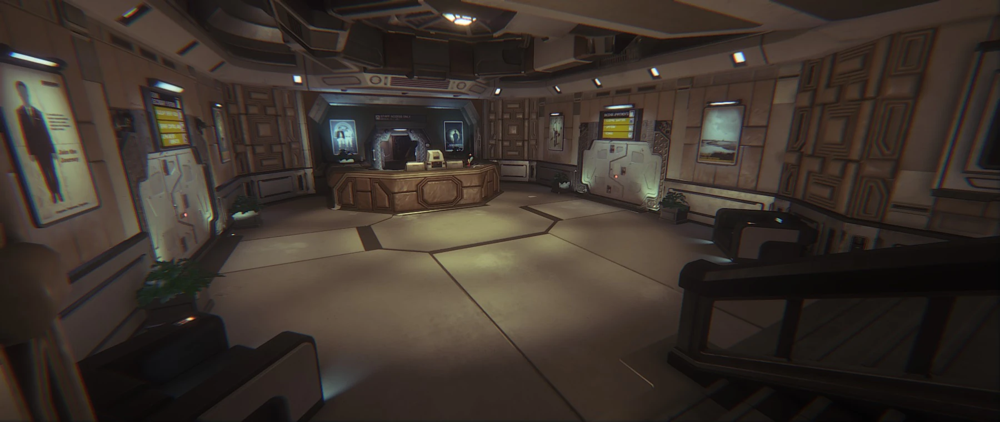 |
SalvageMode2 |
"Lost Contact" — Lost Contact DLC (Lorenz Private Wards and S6 Emergency Power Plant). | 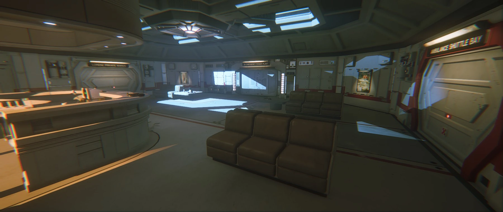 |
{kind=link}
{kind=link}
{kind=link}
{kind=link}
{kind=link}
{kind=link}
{kind=link}
{kind=link}
{kind=link}
{kind=link}
{kind=link}
{kind=link}
{kind=link}
{kind=link}
{kind=link}
{kind=link}
{kind=link}
{kind=link}
{kind=link}
{kind=link}
{kind=link}
{kind=link}
{kind=link}
{kind=link}
{kind=link}
{kind=link}
{kind=link}
{kind=link}
{kind=link}
{kind=link}
{kind=link}
{kind=link}
{kind=link}